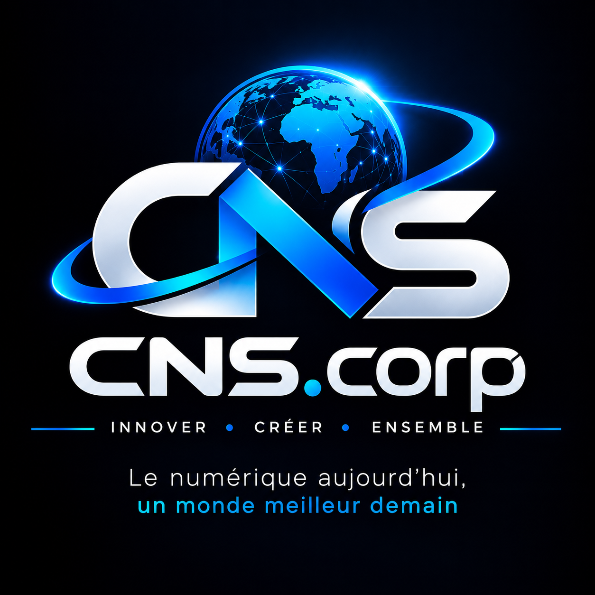
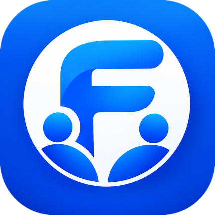

CNS.corp est une entreprise burkinabè fondée par ILBOUDO Régis Canisius, Fondateur & CEO.
Notre mission : vos données, notre priorité ; votre avenir, notre mission.
Nous développons des applications pensées pour le quotidien des Burkinabè : communication, jeux et outils d'administration, en privilégiant la simplicité, la sécurité et des interfaces claires.
InnoverSécuriserConstruire l'avenir

FriendBook réunit CANIX, un assistant vocal qui discute, conseille et raconte des histoires, avec des jeux intégrés comme Bubble Rush et FasoRunner.
Découvrir FriendBookLe lien de téléchargement sera ajouté dès que l'application sera publiée.
TÕÕLé est une application de messagerie pensée pour faciliter la communication au Burkina Faso. Elle est née de longs tests et d'un travail soutenu.
Le lien de téléchargement sera ajouté dès que l'application sera publiée.
GameZone est en cours d'amélioration : de nouveaux jeux et de nouvelles fonctions arrivent bientôt.
GameZone réunit des jeux inspirés de la culture burkinabè et des jeux de réflexion.
Le lien de téléchargement sera ajouté dès que l'application sera publiée.
Jouer en ligne